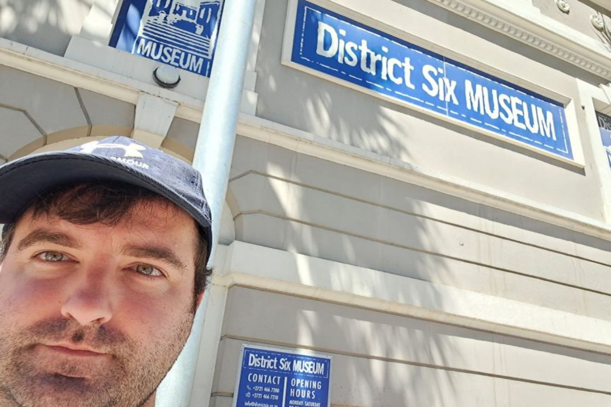

Bjorn Worrall

City I would like to visit - Zurich

Zurich is firstly the Captial of Switzerland. A country that has a lot of beauty to it. Zurich sits on a beautiful lake called Lake Zurich There is also I alot of rich history there as well. With early settlements dating back to 6400 years ago. So i would love to explore and enjoy the history and nature of Zurich
Language I would like to learn - Portuguese
For me there are so many countries the speak Portugese. So i feel alot of good can come from it
| English | Portuguese |
|---|---|
| Hello | olá |
| Good morning | Bom dia |
| i'm hungry | estou com fome |
| Goodbye | adeus |
| beautiful | lindo |
Historic places in my city - Cape Town
Church Square
The name Spin Street comes from a silk–spinning factory between Plein Street and Parliament Street. it houses a cultural and historical museum. In 1961, the square was declared a heritage site.

City Hall
On February 11, 1990, only hours after his release from prison, Nelson Mandela made his first public speech. Was built in 1905 as a large Edwardian building
District 6 Museum
Serves as a memorial to the forced movement of 60,000 inhabitants of various races in District Six during Apartheid in the 1970s. One former resident is jazz musician, Abdullah Ibrahim, better known by the name Dollar Brand. District Six museum was founded in 1994.
